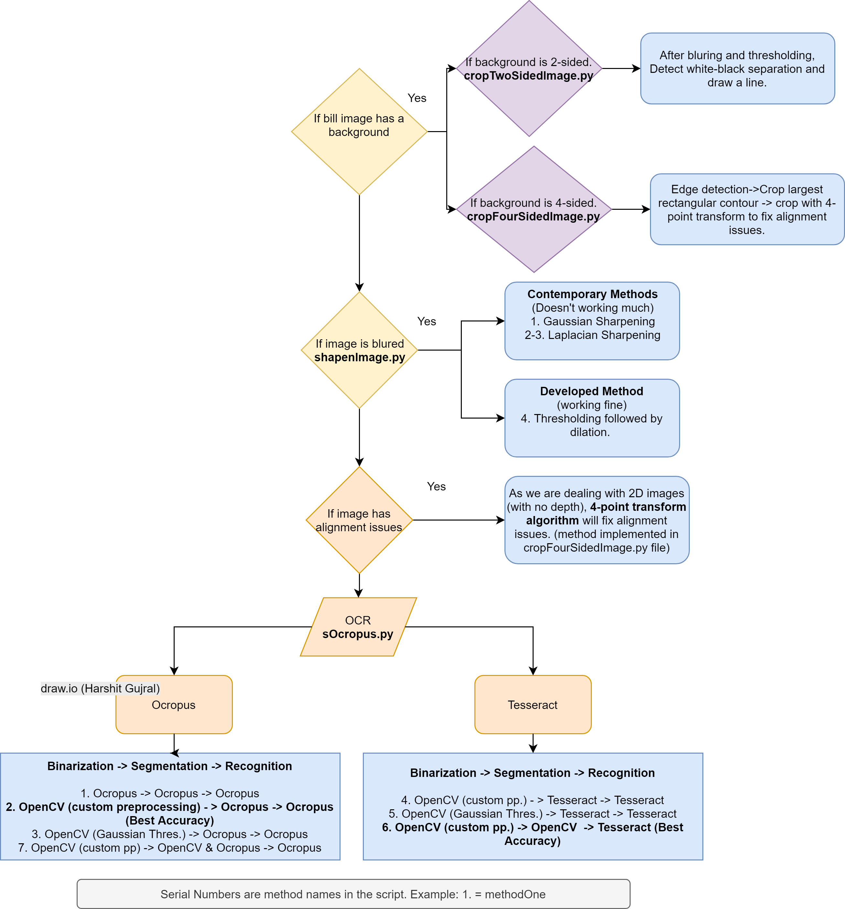

Computer Vision
This repository consists scripts for OCR (Optical Character Recognition) of white paper receipts. It includes Cropping (removing background), Improving Quality (if image is blurred), Binarization, Segmentation and Prediction.
Tools/Technologies Used:
Python, OpenCV, Ocropus and Tesseract.
Flowchart (How to use?)

References
- Sharpening and Convolutions, OpenCv, https://www.pyimagesearch.com/2016/07/25/convolutions-with-opencv-and-python/
- Gaussian Sharpening, Theory, http://biomedpharmajournal.org/vol7no2/image-sharpening-by-gaussian-and-butterworth-high-pass-filter/
- https://en.wikipedia.org/wiki/Unsharp_masking#Digital_unsharp_masking
- Gaussian Sharpening, OpenCV, https://stackoverflow.com/a/4993701
- Laplacian Sharpening Theory, http://www.idlcoyote.com/ip_tips/sharpen.html.
- Laplacian, https://stackoverflow.com/questions/39619222/laplacian-sharpening-grey-image-as-result
- Modified Laplacian, https://stackoverflow.com/a/51138416
- Lossy Problem, https://stackoverflow.com/a/52442741
- Google Vision, https://www.quora.com/How-does-Google-Vision-API-works
- 4-point transform algorithm, https://www.pyimagesearch.com/2014/08/25/4-point-opencv-getperspective-transform-example/
- Document Scanner, https://www.pyimagesearch.com/2014/09/01/build-kick-ass-mobile-document-scanner-just-5-minutes/
- Detect and Crop, https://www.quora.com/How-can-I-detect-an-object-from-static-image-and-crop-it-from-the-image-using-openCV
- Crop a Contour, https://stackoverflow.com/questions/28759253/how-to-crop-the-internal-area-of-a-contour
- Ocropus Part-A, http://www.danvk.org/2015/01/07/finding-blocks-of-text-in-an-image-using-python-opencv-and-numpy.html
- Ocropus Part-B, https://www.danvk.org/2015/01/09/extracting-text-from-an-image-using-ocropus.html
- Ocropus Part-C, http://www.danvk.org/2015/01/11/training-an-ocropus-ocr-model.html